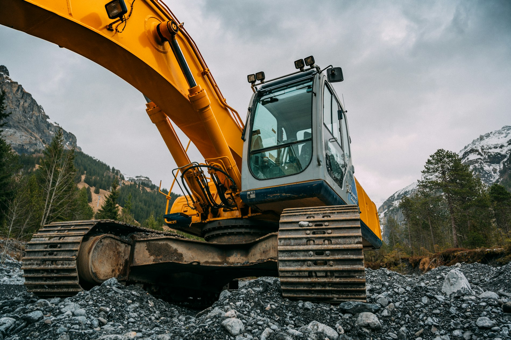

Gépi földmunka
Földmunkák és építési terület előkészítése.
↘FÖLDMUNKA · MÉLYÉPÍTÉS · GAMÁS
MECZGER / 01Földmunka és terület-előkészítés.
Közművek a felszín alatt.

01 / TEVÉKENYSÉGEINK
A Meczger Mélyépítő Kft. nyilvánosan megadott tevékenységei. A konkrét feladat részleteiről és vállalhatóságáról telefonon vagy e-mailben egyeztethet.
Földmunkák és építési terület előkészítése.
↘Épületek bontása.
↘Víz- és csatornaközművek építése.
↘Közúti teherszállítás.
↘Öntözőrendszerek telepítése és karbantartása.
↘02 / MOZGÁSBAN
Alváz, fülke, gém és kanál.
Görgetésre a részletek géppé állnak össze.
Szemléltető animáció, nem a vállalkozás saját munkagépe.
03 / KAPCSOLAT
Írja meg vagy mondja el, milyen feladathoz keres kivitelezőt.
+36 70 392 2641 ↗meczger.norbert@gmail.com ↗